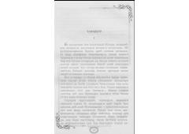

TQishloq hayoti va insoniy tafakkurni jonli tasvirlaydigan o'zbek hikoyasi.
"Tafakkur" — Zulfiya Qurolboy qizining hikoyasi bo'lib, qishloq hayotini, uning odamlari, urf-odatlari va kundalik turmushini jonli va ta'sirchan tarzda tasvirlaydi. Asarda qishloq tegirmonchisining o'g'li Tangriberdi va uning atrofidagi voqealar markaziy o'rin tutadi. Hikoya o'zbek qishlog'ining o'ziga xos muhiti, tabiat manzaralari va insoniy munosabatlar orqali chuqur ma'no kasb etadi.